формул 118 · sympy ok 90 · структурно ok 118 · с кириллицей в базе 10 · меняет нормализация 14 · не извлечено 0
ml/research/human-views/.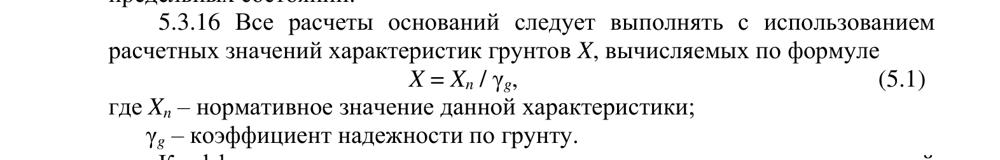
X=X_{n}/\gamma_{g}
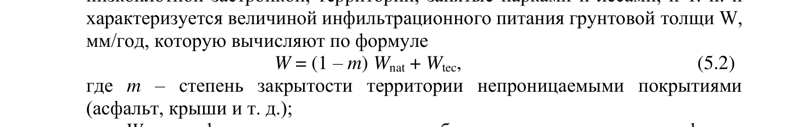
W=(1–m)W_{nat}+W_{tec}
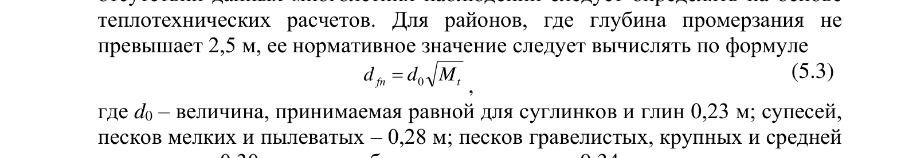
d_{fn}=d_{0}\sqrt{M_{t}} ^{fn0}
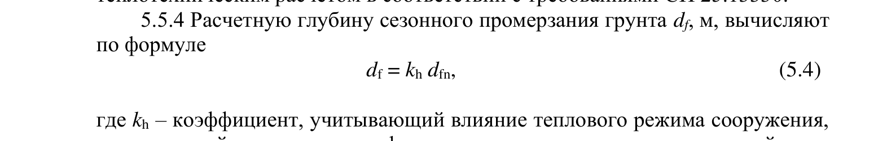
d_{f}=k_{h}d_{fn}
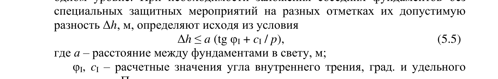
\Deltah≤a(tg\varphi_{I}+c_{I}/p)
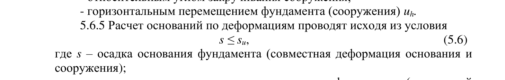
s≤s_{u}
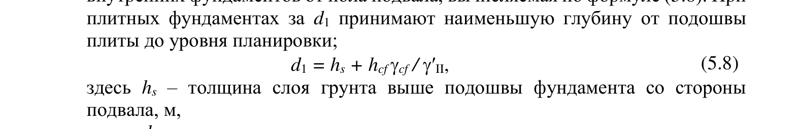
d_{1}=h_{s}+h_{cf}\gamma_{cf}/\gamma′_{II}
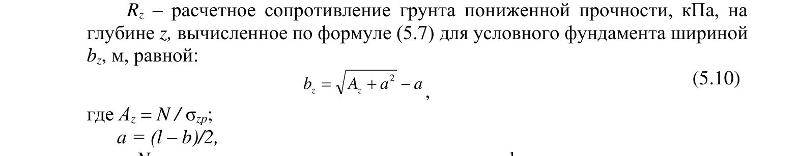
b_{z}=\sqrt{A_{z}+a^{2}}−a
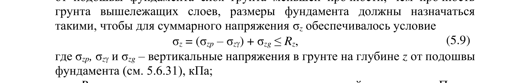
\sigma_{z}=(\sigma_{zp}–\sigma_{z\gamma})+\sigma_{zg}≤R_{z}
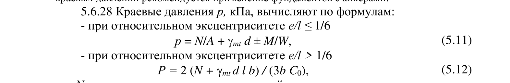
р=N/A+\gamma_{mt}d±M/W
p=N/A+\gamma_{mt}d±M/W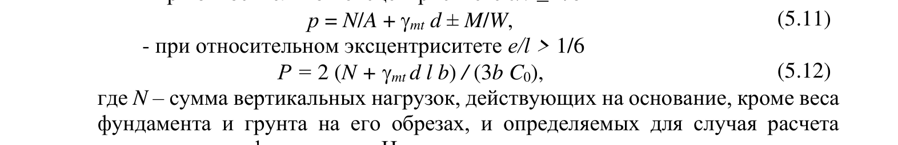
Р=2(N+\gamma_{mt}dlb)/(3bC_{0})
P=2(N+\gamma_{mt}dlb)/(3bC_{0})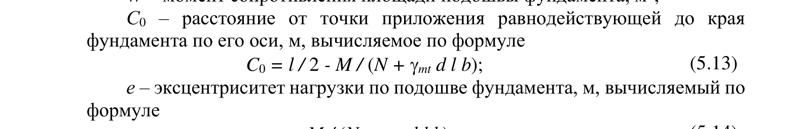
C_{0}=l/2-M/(N+\gamma_{mt}dlb)
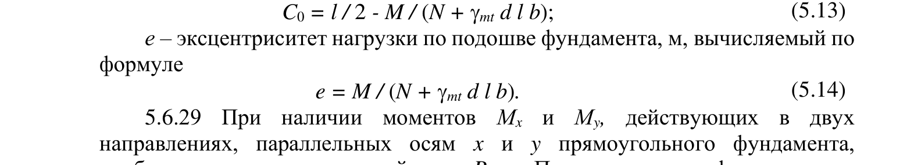
e=M/(N+\gamma_{mt}dlb)
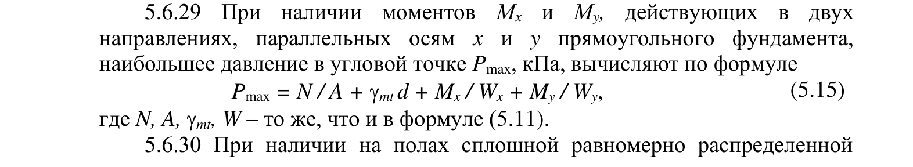
P_{max}=N/A+\gamma_{mt}d+M_{x}/W_{x}+M_{y}/W_{y}
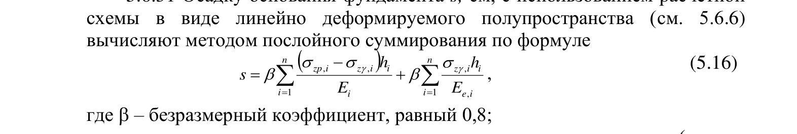
s=\beta\sum_{i=1}^{n}{\frac{(\sigma_{zp,i}−\sigma_{z\gamma,i})h_{i}}{E_{i}}+\beta\sum_{i=1}^{n}\frac{\sigma_{z\gamma,i}h_{i}}{E_{e,i}}}
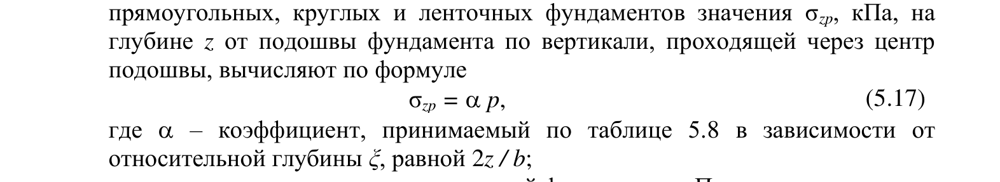
\sigma_{zp}=\alphap
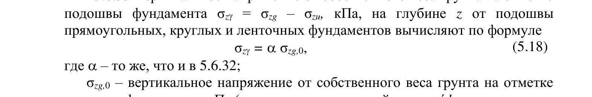
\sigma_{z\gamma}=\alpha\sigma_{zg,0}
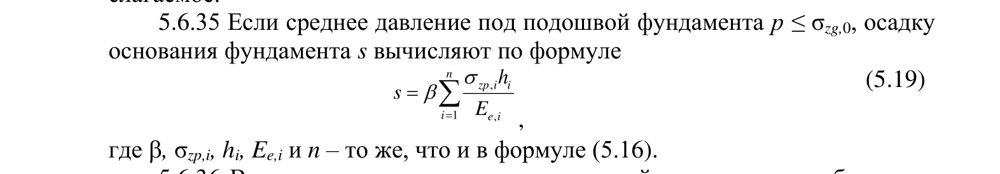
s=\beta\sum_{i=1}^{n}{\frac{\sigma_{zp,i}h_{i}}{E_{e,i}}}
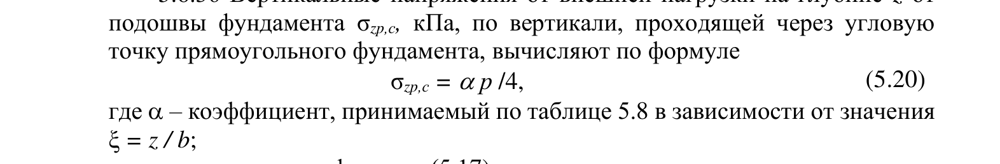
\sigma_{zp,с}=\alphaр/4
\sigma_{zp,c}=\alphap/4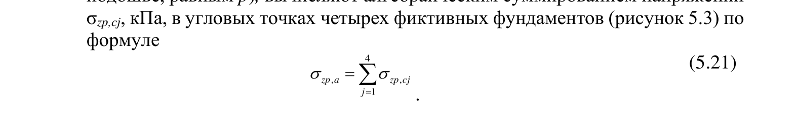
\sigma_{zp,a}=\sum_{j=1}^{4}{\sigma_{zp}}
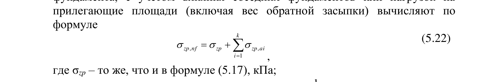
\sigma_{zp,nf}=\sigma_{zp}+\sum_{i=1}^{k}{\sigma_{zp}}
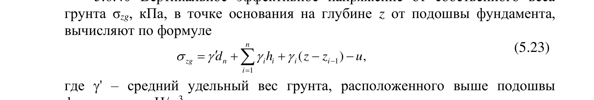
\sigma_{zg}=\gamma\prime d_{n}+\sum^{n}{\gamma_{i}h_{i}+\gamma_{i}(z−z_{i−1})−u}
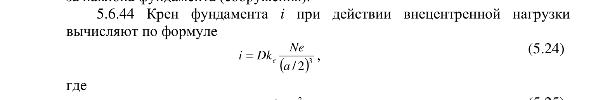
i=Dk_{e}\frac{Ne}{(a/2)^{3}}
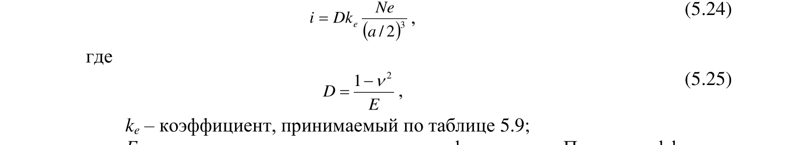
D=\frac{1−\nu^{2}}{E}
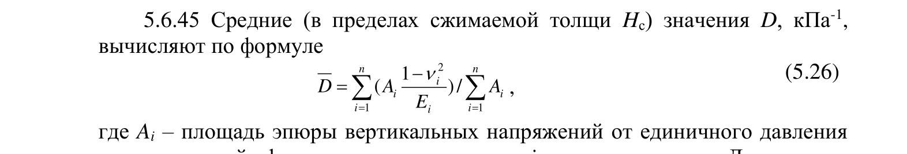
D=\sum_{i=1}^{n}{(A_{i}\frac{1−\nu_{i}^{2}}{E_{i}})/\sum_{i=1}^{n}A_{i}}
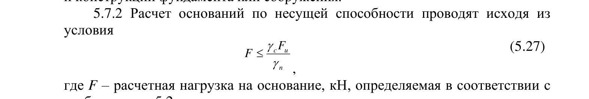
F\leq \frac{\gamma_{c}F_{u}}{\gamma_{n}}
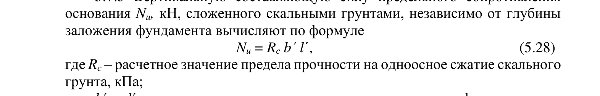
N_{u}=R_{c}b^{\prime}l^{\prime}
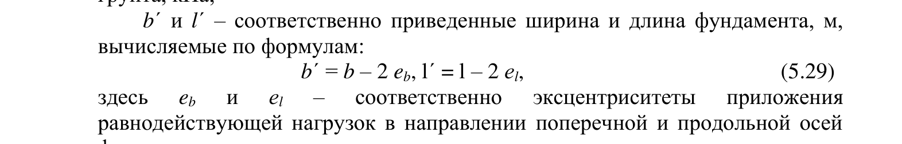
b^{\prime}=b–2e_{b},l^{\prime}=l–2е_{l}
b^{\prime}=b–2e_{b},l^{\prime}=l–2e_{l}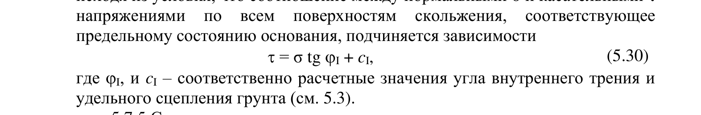
\tau=\sigmatg\phi_{I}+c_{I}
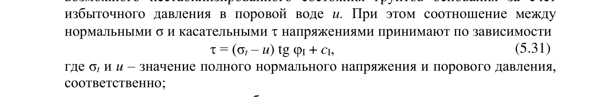
\tau=(\sigma_{t}–u)tg\phi_{I}+c_{I}
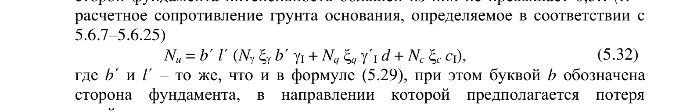
5.6.7–5.6.25) N_{u}=b^{\prime}l^{\prime}(N_{\gamma}\xi_{\gamma}b^{\prime}\gamma_{I}+N_{q}\xi_{q}\gamma^{\prime}_{I}d+N_{c}\xi_{c}с_{I})
5.6.7–5.6.25) N_{u}=b^{\prime}l^{\prime}(N_{\gamma}\xi_{\gamma}b^{\prime}\gamma_{I}+N_{q}\xi_{q}\gamma^{\prime}_{I}d+N_{c}\xi_{c}c_{I})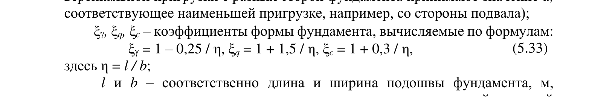
\xi_{\gamma}=1–0,25/\eta,\xi_{q}=1+1,5/\eta,\xi_{c}=1+0,3/\eta
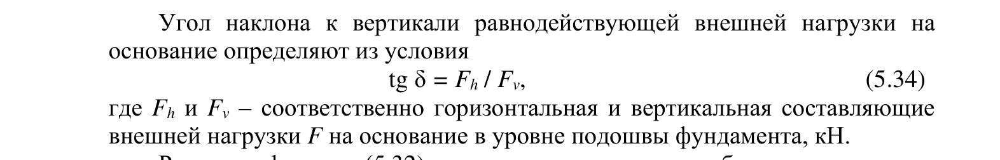
tg\delta=F_{h}/F_{v}
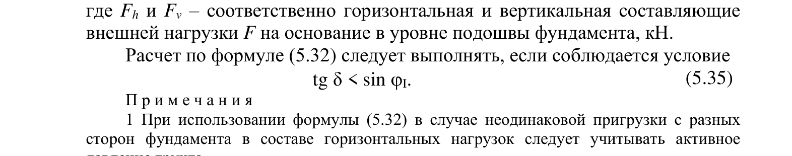
tg\delta<sin\phi_{I}
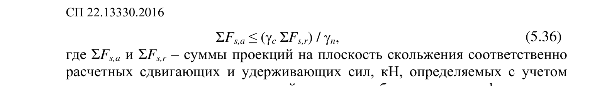
F_{s,a}≤(\gamma_{c}\sum{F_{s,r})/\gamma_{n}}
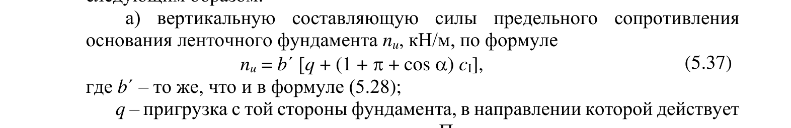
n_{u}=b^{\prime}[q+(1+\pi+cos\alpha)c_{I}]
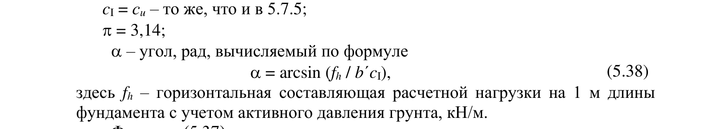
\alpha=arcsin(f_{h}/b^{\prime}c_{I})
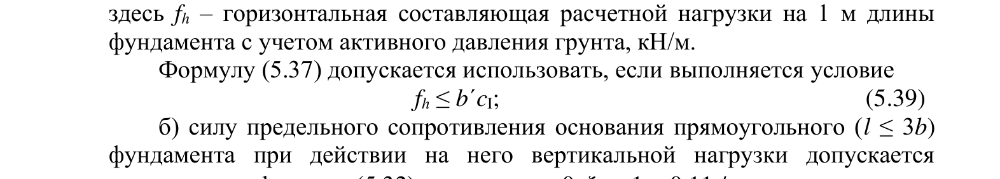
f_{h}≤b^{\prime}c_{I}
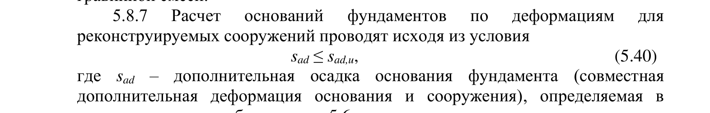
s_{ad}≤s_{ad,u}
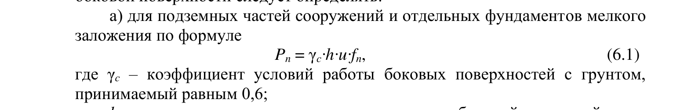
P_{n}=\gamma_{с}·h·u·f_{n}
P_{n}=\gamma_{c}·h·u·f_{n}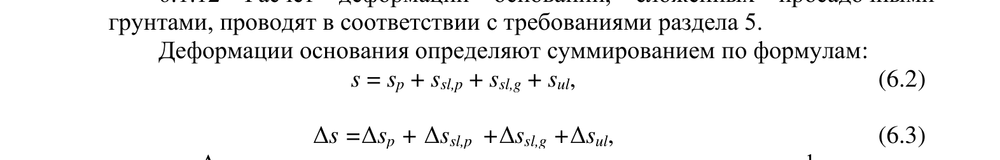
s=s_{p}+s_{sl,p}+s_{sl,g}+s_{ul}
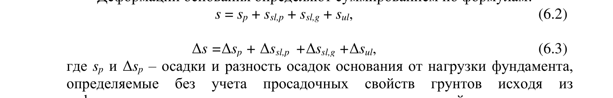
\Deltas=\Deltas_{p}+\Deltas_{sl,p}+\Deltas_{sl,g}+\Deltas_{ul}
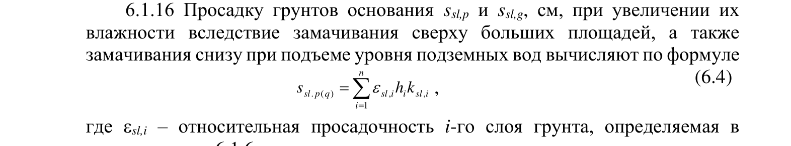
s_{sl.p(q)}=\sum_{i=1}^{n}{\epsilon_{sl,i}h_{i}k_{sl,i}}
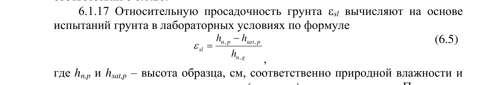
\epsilon_{sl}=\frac{h_{n,p}−h_{sat,p}}{h_{n,g}}
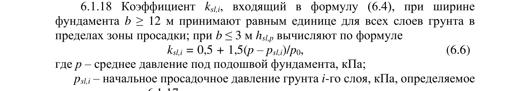
k_{sl,i}=0,5+1,5(p–p_{sl,i})/p_{0}
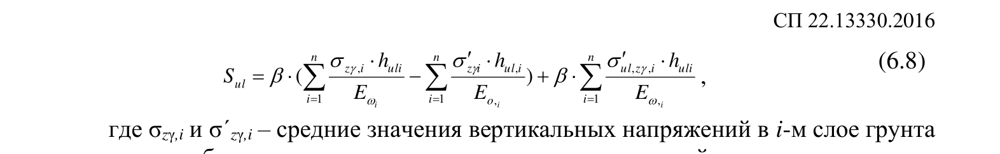
S_{ul}=\beta\cdot (\sum_{i=1}^{n}{\frac{\sigma_{z\gamma,i}\cdot h_{uli}}{E_{\omega}}−\sum_{i=1}^{n}\frac{\sigma\prime _{z\gammai}\cdot h_{ul,i}}{E_{o,}})+\beta\cdot \sum_{i=1}^{n}\frac{\sigma_{u}\prime _{l,z\gamma,i}\cdot h_{uli}}{E_{\omega,}}}
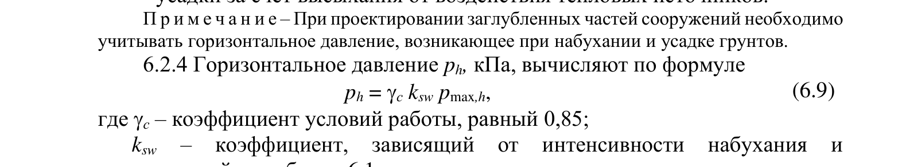
p_{h}=\gamma_{с}k_{sw}p_{max,h}
p_{h}=\gamma_{c}k_{sw}p_{max,h}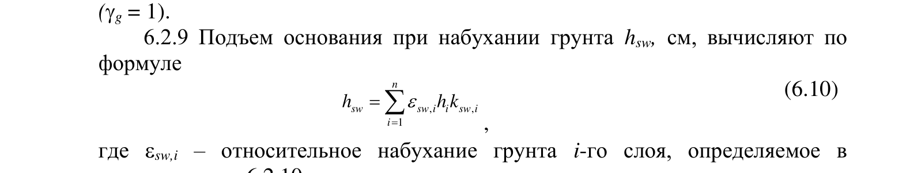
h_{sw}=\sum_{i=1}^{n}{\epsilon_{sw,i}h_{i}k_{s}}
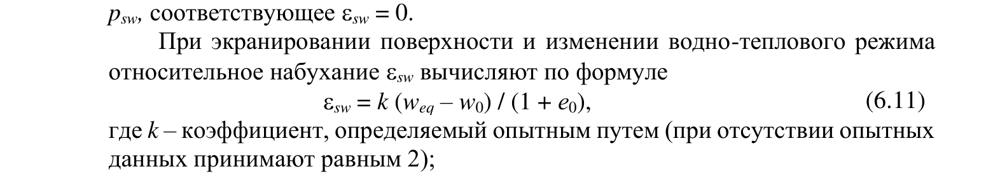
\epsilon_{sw}=k(w_{eq}–w_{0})/(1+е_{0})
\epsilon_{sw}=k(w_{eq}–w_{0})/(1+e_{0})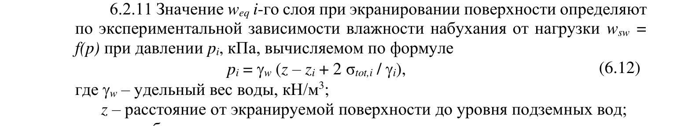
p_{i}=\gamma_{w}(z–z_{i}+2\sigma_{tot,i}/\gamma_{i})
\sigma_{z,tot}=\sigma_{zp}+\sigma_{zg}+\sigma_{z,ad}
\sigma_{z,ad}=k_{g}\gamma(d+z)
s_{sh}=\sum_{i=1}^{n}{\epsilon_{sh,i}h_{i}k_{s}}
\epsilon_{sh}=(h_{n}–h_{d})/h_{n}
\epsilon_{sf}=k_{1}d_{0}\rho_{d}\beta^{n}/\rho_{g}
s_{sf}=\sum_{i=1}^{n}{\epsilon_{sf,i}h_{i}}
\epsilon_{sf}=(h_{sat},_{p}–h_{sf},_{p})/h_{ng}
N_{и}=b^{\prime}(q+5,14c_{I})
s=3ph/(3E+4p)
K_{wr}=1–I_{wr}, I_{wr}=(\rho_{и}–\rho)/\rho
K_{wr}=(k_{1}–k_{0})/k_{1}
K_{fr}=m_{1}/m_{0}
Е=\frac{AtK}{t+B/K_{1}}
E=\frac{AtK}{t+B/K_{1}}A=\frac{E_{1}E_{2}(t_{2}−t_{1})}{K(E_{1}t_{2}−E_{2}t_{1})}
B=\frac{t_{1}t_{2}(E_{2}−E_{1})K_{1}}{(E_{1}t_{2}−E_{2}t_{1})}
c_{n}=\frac{A_{1}tK}{t+B_{1}/K_{1}}
A_{1}=\frac{c_{1}c_{2}(t_{2}−t_{1})}{K(c_{1}t_{2}−c_{2}t_{1})}
B_{1}=\frac{t_{1}t_{2}(c_{2}−c_{1})K_{1}}{(c_{1}t_{2}−c_{2}t_{1})}
\varphi_{n}=\varphi_{∞}[1−exp(–t/C−D)]
C=\frac{t_{2}−t_{1}}{ln(1−_{\varphi}^{\varphi1})−ln(1−_{\varphi}^{\varphi2})}
D=\frac{t_{1}ln(1−_{\varphi}^{\varphi2})−t_{2}ln(1−_{\varphi}^{\varphi1})}{t_{2}−t_{1}}\frac{\varphi}{\varphi∞}\frac{\varphi}{\varphi∞}
\left.\begin{aligned}0,012(w−0,1)+\\R_{f}=0,67\rho_{d}0,012(w−0,1)+\frac{w(w−w_{cr})^{2}}{w_{sat}w_{p}M_{0}}/\frac{cr)2}{M_{0}}\\0,012(w−0,1)+\frac{w(w−w_{cr})^{2}}{w_{sat}w_{p}M_{0}}/\frac{cr)2}{M_{0}}\\/\frac{cr)2}{M_{0}}\end{aligned}\right\}
\tau_{fh}A_{fh}−F\leq \frac{\gamma_{c}}{\gamma_{n}}F_{rf}
2 D=k/d^{2}e
d=(p_{1}/d_{1}+p_{2}/d_{2}+...+p_{i}/d_{i})^{−1}
F_{rf}=\sum_{j=1}^{n}{R_{fj}A_{fj}}
R_{r}=R_{stb}/\gamma_{ss}
\gamma_{n}·N_{d}\leq R_{t;d}/\gamma_{c}
\gamma_{n}·N_{d}\leq F_{t;d}/\gamma_{c,g}
\gamma_{n}·N_{d}\leq R_{d}/\gamma_{c}
\gamma_{n}·N_{d}\leq F_{d}/\gamma_{c,g}
Е=\alphaE+(1–\alpha)/Е
E=\alphaE+(1–\alpha)/E
1/Е=[\alphaE]+[(1–\alpha)/Е]
1/E=[\alphaE]+[(1–\alpha)/E]
\geq p
N_{a}≤\gamma_{c,eq}N_{u,eq}/\gamma_{n}
\varphi^{s}_{I}=\varphi_{I}–\Delta\varphi
p_{0}=\xi_{q}F_{1}\gamma^{\prime}_{I}d+\xi_{c}(F_{1}–1)c_{I}/tg\varphi_{I}
p_{b}=p_{0}+\xi_{\gamma}\gamma_{I}b(F_{2}–k_{eg}F_{3})
e_{a}=M_{a}/N_{a}
e_{u}=b(p_{b}–p_{0})/[6(p_{b}+p_{0})]
e_{a}≤e_{u}N_{u,eq}=0,5bl(p_{b}+p_{0})
e_{a}>e_{u}N_{u,eq}=blp_{b}/(1+6e_{a}/b)
p_{max}=2N_{a}/[3l(b/2–e_{a})]≤p_{b}
N_{u,eq}=0,5b_{c}lp_{b}
p\leq \gamma_{cd}R
(F_{n}–G_{n}cos\beta)≤=\gamma_{c}R^{\prime}_{0}A_{0}
(F–\gamma_{f}G_{n}cos\beta)≤=\gamma_{c}F_{u,a}/\gamma_{n}
F_{u,a}=\gamma_{bf}(V_{bf}–V_{f})cos\beta+c_{0}[A_{1}cos(\phi_{0}–\beta/2)+A_{2}cos(\phi_{0}+\beta/2)+ 2A_{3}cos\phi_{0}]
c_{0}=\etac_{I};\phi_{0}=\eta\phi_{I}
F_{h}≤=\gamma_{c2}F_{hu}/\gamma_{n}
F_{c}\leq \gamma_{c}RA/\gamma_{g}
\sigma'_{h,0}(z)=K_{0}[\sigma'_{z\gamma}(z)+\sigma'_{zp}(z)]
K_{0}=\nu/(1–\nu)
K_{0}=(1−sin\phi)\sqrt{OCR}
К_{0,\beta}=K_{0}(1+sin\beta)
K_{0,\beta}=K_{0}(1+sin\beta)\sigma'_{h,a}(z)=K_{a}(\gamma\cdot z+q)−2c\sqrt{K_{a}}
\tau'_{a}(z)=\sigma'_{h,a}(z)tg\delta
\tau'_{a}(z)=\sigma'_{h,p}(z)tg\delta
K_{a}=tg^{2}(45^{\circ}−\phi/2)
\sigma'_{h,p}(z)=K_{р}(\gammaz+q)+2c\sqrt{K_{p}}
\sigma'_{h,p}(z)=K_{p}(\gammaz+q)+2c\sqrt{K_{p}}K_{a}=tg^{2}(45^{\circ}+\phi/2)
\sigma'_{h}(z)=K(\gamma'z+q\pm \gamma_{w}I)
\sigma_{ha}(z)=\sigma_{z\gamma}(z)+\sigma_{zp}(z)−2c_{u}
\sigma_{hр}(z)=\sigma_{z\gamma}(z)+\sigma_{zp}(z)+2c_{u}
\sigma_{hp}(z)=\sigma_{z\gamma}(z)+\sigma_{zp}(z)+2c_{u}\gamma_{f}\gamma_{w}H_{0}≤\gamma_{I}h_{0}
\gamma_{f}I≤1
\gamma_{w}H_{0}A≤\gamma_{f1}\sum{G_{stb,c}+\gamma_{f2}\sumG_{stb,l}+\gamma_{f3}\sumR_{stb}}
s_{ad}≤s_{ad,u}